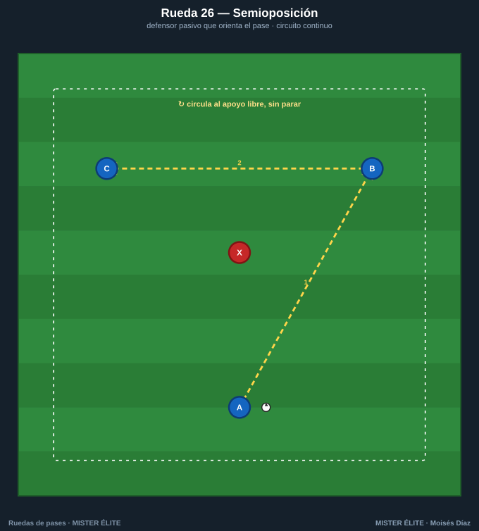
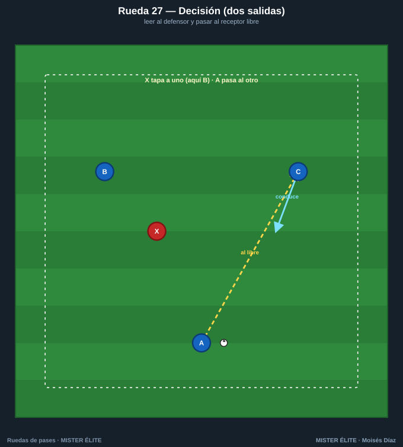
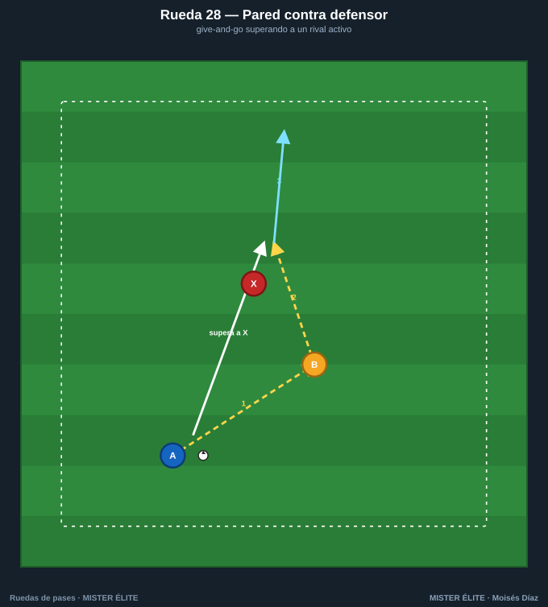
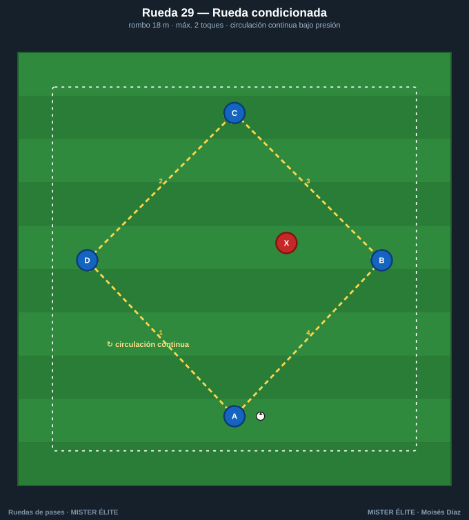
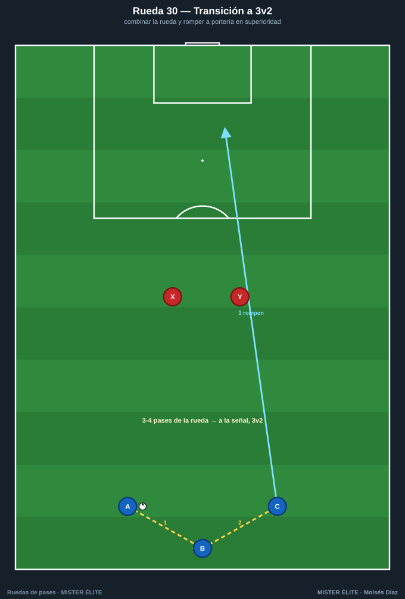

Familia 6 · Oposición y transferencia (26–30)
El último escalón: aparece el rival y, con él, la decisión. Aquí la rueda deja de "dar la respuesta" y empieza a obligar a buscarla. Es el puente final hacia el partido —exactamente lo que enseña el Módulo 4—.
Coaching points de la familia: leer al defensor antes de recibir · pasar al apoyo libre · ejecutar el patrón rápido para que la oposición no llegue · resolver con criterio en superioridad.
Rueda 26 — Semioposición

- Objetivo: introducir un adversario que orienta el pase sin robar (primer paso hacia la decisión).
- Secuencia: 1) A lee dónde está X y pasa al apoyo libre (B o C). 2) Se circula evitando que X corte líneas. 3) "Sigue tu pase".
- Medidas: triángulo de 12 m con X en el centro.
- Variante: subir X a semiactivo (intercepta al 70 %) → activo total.
Rueda 27 — Decisión (dos salidas)

- Objetivo: toma de decisión: leer el desmarque correcto entre dos opciones.
- Secuencia: 1) X cierra a B o C de forma aleatoria. 2) A pasa al que queda libre. 3) El receptor conduce y reinicia por el otro lado.
- Medidas: B y C separados 15-18 m; X entre ambos.
- Variante: señal de color/voz que indica el destino obligado · añadir un segundo defensor.
Rueda 28 — Pared contra defensor

- Objetivo: ejecutar el pase-pared superando a un rival activo.
- Secuencia: 1) A encara a X y juega la pared con B. 2) A supera a X por su espalda recibiendo la devolución. 3) A conduce a meta.
- Medidas: A-B 6-7 m; pasillo de 18×10 m.
- Variante: premio si supera limpio · añadir portería y portero para finalizar.
Rueda 29 — Rueda condicionada

- Objetivo: transferir el patrón a condicionantes de juego real.
- Secuencia: 1) Circulación libre del rombo. 2) Condición: máximo 2 toques y el pase de salida va al lado contrario de X. 3) Si X roba, intercambia con quien perdió.
- Medidas: rombo de 18 m con X presionando la recepción.
- Variante: sumar un segundo defensor · recompensa por completar 6 pases bajo presión.
Rueda 30 — Transición a 3v2 a portería

- Objetivo: transferir la combinación a una situación real con oposición y finalización.
- Secuencia: 1) A-B-C combinan 3-4 pases de la rueda (pared + tercer hombre). 2) A la señal, rompen hacia portería en 3v2. 3) Resuelven y finalizan.
- Medidas: zona de ataque de 30×40 m, portería con portero.
- Variante: empezar 3v1 → 3v2 → 3v3 · límite de tiempo para rematar (6-8 s).
Cierre del banco: has recorrido la escalera completa —de la forma básica (Rueda 01) a la situación real con oposición y portería (Rueda 30)—. Esa es la transferencia: el gesto que automatizaste en la rueda cerrada ahora aparece bajo presión. Del patrón al partido.